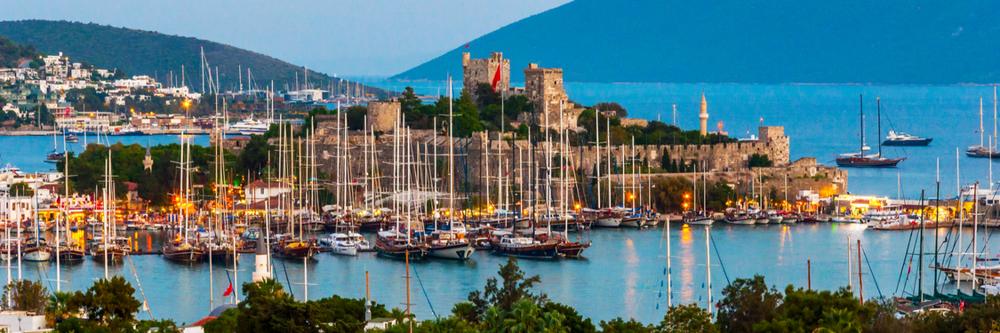
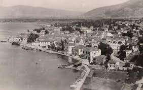
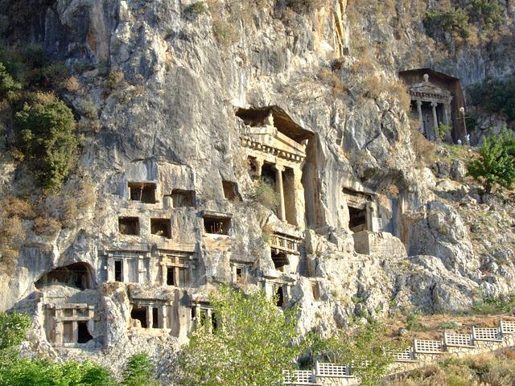
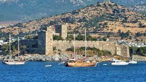
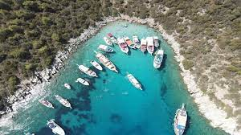

Muğla, Türkiye'nin bir ili ve en kalabalık yirmi dördüncü şehridir. 2020 itibarıyla 1.021.773 nüfusa sahiptir. Ege Bölgesi'nde, topraklarının küçük bir kısmı Akdeniz Bölgesi içine giren, Ortaca, Dalaman, Köyceğiz, Fethiye, Marmaris, Milas, Datça ve Bodrum gibi tatil yöreleri ile ünlü bir yerleşim yeridir. İlde 13 ilçe bulunur.

Antik Karya bölgesinin en eski yerleşimlerinden biri olan Muğla, bilinen tarihi boyunca başlangıçta Anadolu'nun yerli halkı Karyalıların, ardından kısmen ve kısa dönemler halinde Mısır, Asur ve İskit işgallerinin, zamanla da özellikle kıyılarda Helenistik kolonizasyon hareketinin egemenliği altında kalmıştır. Önce Medler, daha sonra Persler Muğla'yı idareleri altında almışlar ve bölgeyi bir satrap aracılığıyla yönetmişlerdir. Büyük İskender'in ordularıyla gelişinde Muğla bölgesi bir Karya satrapı tarafından yönetilmekte idi.
Muğla'da ilk yerleşimlerin ne zaman başladığı hakkında önemli bir bilgi yoktur. Fakat kentin eskiden İç Karya olarak adlandırılan bölgede yer aldığı bilinmektedir. Karya'nın MÖ 2000'de Hititlerce de bilinen bir medeniyet olduğu göz önüne alınırsa Muğla'da yerleşimin bu tarihlere kadar geriye gittiği söylenebilir. Bazı kaynaklarda da bu bölgeye ilk yerleşenlerin Hititler olduğu yazılıdır. Sırasıyla Frig, Lidya, Pers, Makedon, Bergama Krallığı ve Roma hakimiyetini yaşayan şehir, Menteşe Bey tarafından 1284'te alınmasıyla ilk defa Türk hâkimiyetine girdi.
Cumhuriyetin kurulmasından sonraki idari yapılanmada Muğla ilinin yönetim merkezi olan şehir, dağlık yapısı ve dışarıya açılan elverişli bağlantı yollarına sahip olmadığından gelişememiştir. Yıllarca sadece il merkezi olmasının verdiği hareketlilikle gelişmeye çalışan Muğla son yıllarda özellikle üniversitenin açılması, yeni sanayi bölgesinin kurulması ve turizm faaliyetlerinin de artmasıyla dışarıya açılmaya ve gelişmeye başlamıştır.
Muğla ilinin yüzölçümü 12.654 km2'dir. Muğla, Akdeniz iklimi etkisinde kalmaktadır. Muğla şehrinin içinde bulunduğu Menteşe Yöresi'nde dağlar denize paralel uzanmaktadır. 800 m. yüksekliğe kadar olan alanlarda 'Asıl Akdeniz İklimi' ve daha yüksek alanlarda 'Akdeniz Dağ İklimi' hissedilir. Maksimum-minimum sıcaklık değerleri, nemlilik, yağış miktarı ve hakim rüzgâr yönleri yerel coğrafi koşullara göre değişmektedir. Metrekare'ye 1000 mm'den fazla yağış alan Muğla, orman oranı bakımından Türkiye'nin en zengin olan yörelerinden bir tanesidir. Ne var ki yağışların büyük çoğunluğu kış mevsiminde düşer ve yaz kuraklığı belirgindir. Dağların denize paralel uzanmasının ve yükseltinin bu yörede Ege Bölgesi'nin genelinin aksine daha fazla olmasının diğer bir sonucu olarak ulaşım doğu-batı yönünde zorlaşır ve nüfus seyrekleşir.
  
Çukurova Üniversitesi İstatistik Bölümü